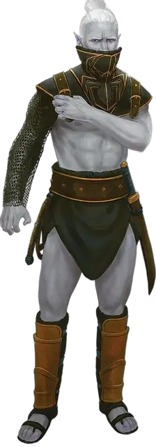

Дроу капитан дома
Drow House Captain
Средний Гуманоид (Эльф), обычно нейтрально-злой

Класс Доспеха 16 (кольчуга)
Хиты 162 (25к8 + 50)
Скорость 30 футов
| мод | спас | ||
|---|---|---|---|
| СИЛ | 14 | +2 | +2 |
| ЛОВ | 19 | +4 | +8 |
| ТЕЛ | 15 | +2 | +6 |
| мод | спас | ||
|---|---|---|---|
| ИНТ | 12 | +1 | +1 |
| МДР | 14 | +2 | +6 |
| ХАР | 13 | +1 | +1 |
Навыки Восприятие +6, Скрытность +8
Чувства тёмное зрение 120 футов, пассивное Восприятие 16
Языки Подземный, Эльфийский
Опасность 9 (5000 опыта)
Бонус мастерства +4
Среда обитания Подземье
Особенности
Наследие фей. Дроу совершает с преимуществом спасброски от очарования, и магия не может его усыпить.
Чувствительность к солнечному свету. Находясь на солнечном свету, дроу совершает с помехой броски атаки, а также проверки Мудрости (Восприятие), полагающиеся на зрение.
Действия
Мультиатака. Дроу совершает две Скимитаром и одну Кнутом или Ручным арбалетом.
Скимитар. Рукопашная атака оружием: +8 к попаданию, дистанция 5 фт., одна цель. Попадание: 7 (1к6 + 4) рубящего урона плюс 14 (4к6) урона ядом.
Кнут. Рукопашная атака оружием: +8 к попаданию, дистанция 10 фт., одна цель. Попадание: 6 (1к4 + 4) рубящего урона.
Ручной арбалет. Дальнобойная атака оружием: +8 к попаданию, дистанция 30/120 фт., одна цель. Попадание: 7 (1к6 + 4) колющего урона, и цель должна преуспеть в спасброске Телосложения Сл 13, иначе будет отравленной в течение 1 часа. Если спасбросок провален на 5 и более, цель также становится бессознательной, пока отравлена таким образом. Цель приходит в сознание, если получает урон или другое существо действием разбудит её.
Использование заклинаний. Дроу накладывает одно из следующих заклинаний, без использования материальных компонентов с используя Харизму в качестве базовой характеристики (Сл спасброска от заклинаний 13):
• Неограниченно: пляшущие огоньки [dancing lights];
• 1/день каждое: тьма [darkness], огонь фей [faerie fire], левитация [levitate] (только на себя).
Бонусные действия
Боевая команда. Бонусным действием дроу делает целью одного союзника, которого он может видеть в пределах 30 фт. от себя. Если цель может видеть или слышать дроу, она использует реакцию для совершения одной рукопашной атаки, или применения уклонения или засады.
Реакции
Парирование. Дроу добавляет 3 к своему КД против одной атаки ближнего боя, которая может по нему попасть. Для этого, дроу должен видеть атакующего и должен держать в руках оружие ближнего боя.
Описание
“Капитаны домов сделают всё, чтобы защитить свою семью — будь то их родной дом или их отряд дерзких мятежников. Я бы сделала всё для моей (иногда приводящей в бешенство) матери и для моей любимой семьи, поэтому я восхищаюсь их самоотверженностью”.
— Таша
Каждый благородный дом дроу поручает командование своими военными силами капитану дома, звание обычно присваиваемое первому или второму сыну матриарха. Капитан дома отдаёт приказы другим дроу и рабам, формируя тем самым семейную армию, и тщательно изучает стратегии и тактические действия, становясь эффективным лидером в бою.
Среди последователей Лолс в городе Мензоберранзан в Забытых Королевствах каждый благородный дом доверяет руководство своими вооруженными силами капитану дома, который обычно является первым или вторым сыном верховной матери дроу. В других местах капитаны домов дроу сражаются в войне против Лолс, часто вступая в союз с дуэргарами и остальными, которые также хотят избавить свой подземный мир от зла этой богини.